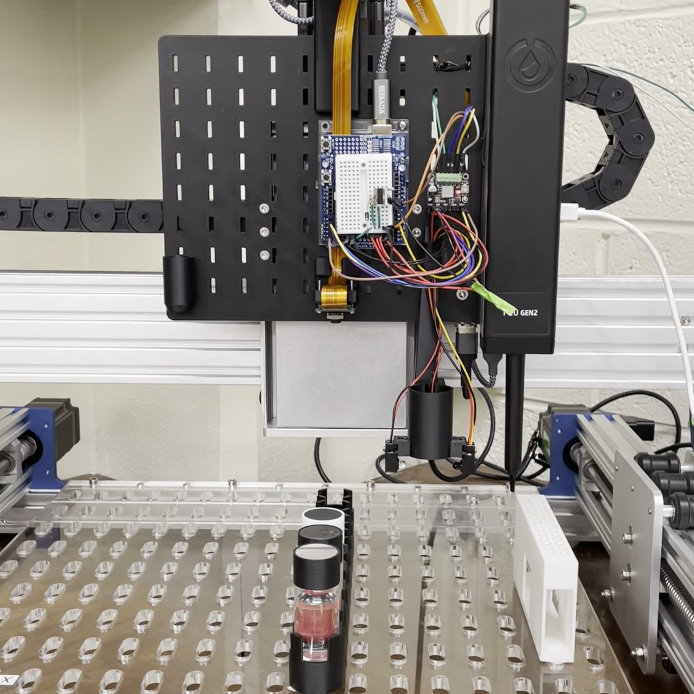
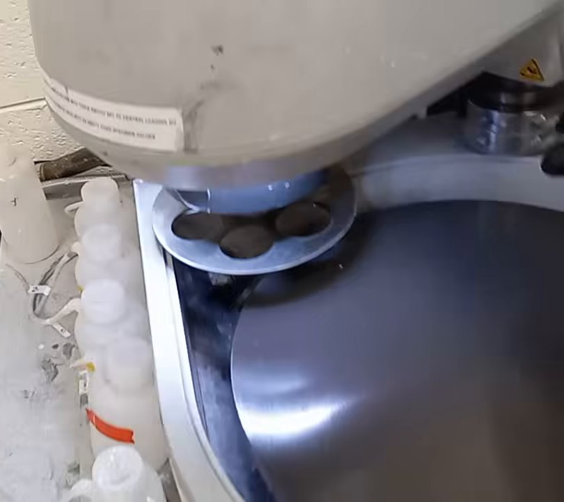
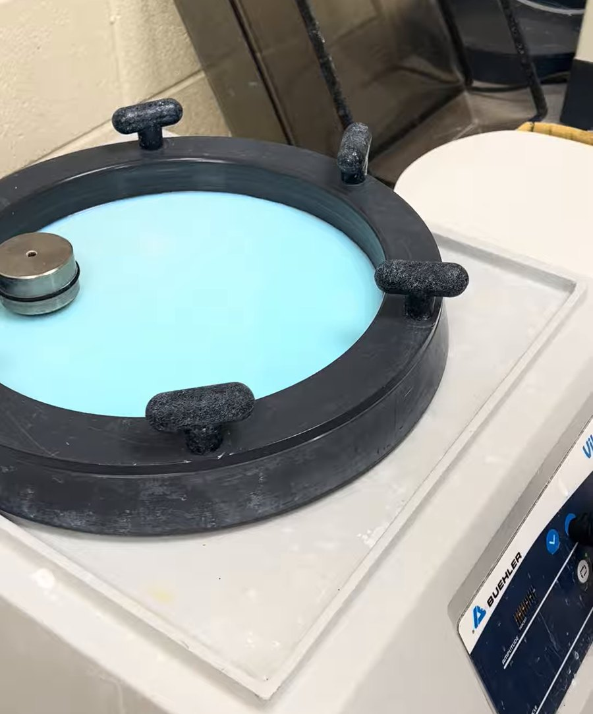
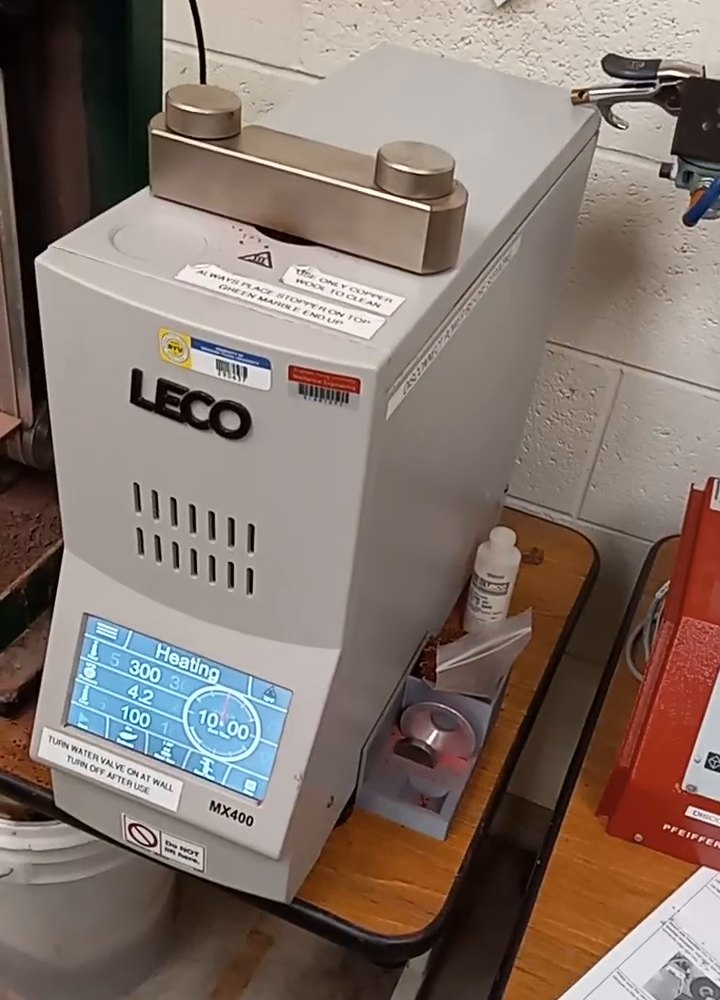
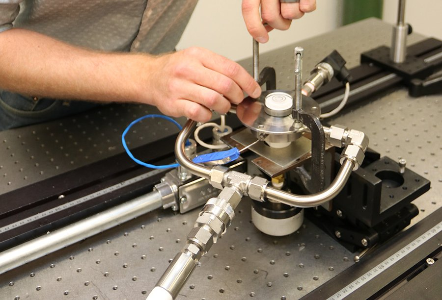

ONR FY2027 Young Investigator Program, NOFO N0001426SF004. PI: Sterling G. Baird, Brigham Young University (BYU)
Equipment available. The equipment below is in place and available to the project at no cost, except where a facility charges hourly rates, which are in the budget.
AMAZEMET rePOWDER ultrasonic atomizer with an induction crucible module (to 1,400 °C, typically run to 1,300 °C; Fig. 1a), with tungsten-coated carbon-fiber plates, boron-nitride-coated graphite crucibles, and ceramic or ceramic-coated sealing rods and nozzles wherever the copper-alloy melt touches (PI laboratory, BYU; purchased with start-up funds in 2026).
Liquid-handling gantry (CubXL, Ursa Laboratories; Fig. 1c) with a pipette, a vial capper and two cameras, run by our own scripts (PI laboratory). It runs the electrochemical corrosion screen and samples the immersion solutions.
Powder handling, sieving and specimen preparation equipment in the PI laboratory: an open-source auger powder doser built in the laboratory (Fig. 1b), a sieve stack from 45 to 250 µm with a sieve shaker, a Hall flowmeter funnel, an analytical balance, glove bags, dry powder storage and sectioning and mounting equipment, including a LECO MX400 hot mounting press (Fig. 1i). The atomizer's steel-panelled enclosure (exhaust, argon supply, dehumidifier, strip-curtain door) with an ATEX-rated vacuum cleaner, a Class D extinguisher and full-face respirators.
NuVant EZstat Pro potentiostat (direct-current measurements), lent to the PI laboratory by a BYU colleague and run by our own scripts on the gantry; it was integrated into the gantry's automated workflow in October 2026, and the corrosion screen, not yet run, will use it until the requested instrument arrives (Fig. 2).
Scanning electron microscopes with EDS and EBSD (Apreo C, Helios 600 with a focused ion beam, Verios) and a Tecnai TF-20 transmission electron microscope at the BYU Electron Microscopy Facility (Fig. 1d), at the posted rate of $30 per hour for engineering users.
Agilent 8900 ICP-MS/MS (Fig. 1e) and XPS at the BYU Spectroscopic Facility, and X-ray diffraction at the BYU X-ray Diffraction Facility.
Metallographic polishers (PX500 automatic, PX300 manual and Buehler VibroMet vibratory; Fig. 1f–h), a Keyence VHX-7000 digital optical microscope, and CNC machining at BYU.
Instron load frames in the materials testing laboratory of the Department of Mechanical Engineering, for sub-size tensile tests.
The BYU Office of Research Computing cluster (about 28,000 CPU cores and 367 GPUs).
Blown-powder DED through purchased sessions: the InssTek MX-Lab (500 W, six powder feeders; Fig. 1j) at the University of Utah for tracks and small deposits from up to 0.5 kg of powder, and the FormAlloy X2 at the Colorado School of Mines (Fig. 1k) for 2 kg builds and repair coupons.
Gas atomization through one purchased run a year at Ames National Laboratory (Dr. Jordan A. Tiarks, unfunded collaborator; Fig. 1l), which turns the year's discovered alloy into a gas-atomized lot.
(a)
(b)

(c)
(d)
(e)

(f)
(g)

(h)

(i)
(j)
(k)

(l)
Figure 1. The equipment listed above. In the PI laboratory: (a) the rePOWDER ultrasonic atomizer with its induction module open (28 September 2026), (b) the open-source auger powder doser over its analytical balance, (c) the CubXL liquid-handling gantry with its P20 pipette and vial capper (October 2026). At BYU facilities: (d) Apreo C SEM, (e) Agilent 8900 ICP-MS/MS, (f) PX500 automatic polisher, (g) PX300 manual polisher, (h) VibroMet vibratory polisher, (i) LECO MX400 hot mounting press. Purchased services: (j) the InssTek MX-Lab at the University of Utah, (k) the FormAlloy X2 at the Colorado School of Mines, (l) a close-coupled gas atomization nozzle on a test bench at Ames National Laboratory. Photos (d), (e), (j), (k) and (l) are from the institutions’ web pages (Ames Laboratory photo in (l)); the others are from the laboratory’s own videos.
Equipment to be purchased with project funds. One item, in Period 1: a Squidstat Plus potentiostat/galvanostat with impedance (Admiral Instruments complete setup PL-25-M2-CS: single channel, impedance from 10 μHz to 2 MHz, ±1 A, eight current ranges from 100 nA to 1 A for the nanoamp-to-milliamp currents of 3 to 4 mm O-ring wells, and a Python interface), $5,945 ($5,900 plus $45 shipping) from Admiral Instruments formal quote 1012826 of 28 January 2026, attached as the last page. The electrochemical corrosion screen is one step of the workflow that the cost-aware search schedules, so the instrument must be available every day under our own scripts on the gantry, and the screen’s impedance measurements need a capability the loaned instrument lacks. The potentiostats at BYU are shared instruments booked by the hour, which the search cannot schedule. The item is excluded from the MTDC base (Budget Justification, section D).
Figure 2. The copper corrosion screen on the gantry, from the laboratory’s animation of the planned protocol: an O-ring cell on a copper-nickel specimen during the open-circuit potential step, with the simulated current through the spot. The requested potentiostat will drive this step; until it arrives, the loaned instrument listed above will.